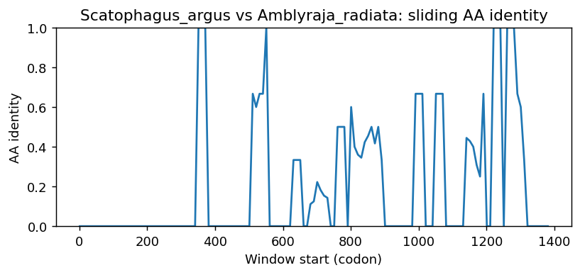

Ortholog Divergence Report
Input: CYYR1.valid.longest.fa · N sequences: 546 · Aligned length: 1383 codons
Reference: Scatophagus_argus
Quick risk overview
- LOW: 0
- INTERMEDIATE: 0
- HIGH: 148785


Composition & complexity per sequence
Saved as per_sequence_composition.csv. High low-complexity or repeat content can reduce BLAST sensitivity due to soft masking.
| id | GC | GC skew | CpG dens. | AA LCR frac | NT repeat frac | AA len | CDS len |
|---|---|---|---|---|---|---|---|
| Scatophagus_argus | 0.5823 | -0.06007 | 0.05567 | 0.26543 | 0.76337 | 162 | 486 |
| Kogia_breviceps | 0.60048 | -0.16633 | 0.05783 | 0.30325 | 0.72804 | 277 | 831 |
| Xyrauchen_texanus | 0.50955 | 0.03333 | 0.03617 | 0.18471 | 0.71338 | 157 | 471 |
| Cercocebus_atys | 0.60471 | -0.14344 | 0.05955 | 0.33829 | 0.69145 | 269 | 807 |
| Lynx_canadensis | 0.54264 | -0.10714 | 0.04272 | 0.35465 | 0.71124 | 172 | 516 |
| Ornithorhynchus_anatinus | 0.7013 | -0.17284 | 0.09978 | 0.36364 | 0.72294 | 154 | 462 |
| Macaca_nemestrina | 0.60099 | -0.14227 | 0.05955 | 0.29368 | 0.70632 | 269 | 807 |
| Bufo_gargarizans | 0.49134 | -0.11894 | 0.01952 | 0.46104 | 0.75325 | 154 | 462 |
| Gavia_stellata | 0.53292 | -0.06564 | 0.03918 | 0.60494 | 0.76543 | 162 | 486 |
| Psammomys_obesus | 0.56458 | -0.09225 | 0.04384 | 0.275 | 0.76875 | 160 | 480 |
| Heterodontus_francisci | 0.48584 | -0.13004 | 0.02838 | 0.07843 | 0.78649 | 153 | 459 |
| Periophthalmus_magnuspinnatus | 0.5754 | -0.06207 | 0.05567 | 0.1369 | 0.70635 | 168 | 504 |
| Scleropages_formosus | 0.59785 | -0.08633 | 0.0625 | 0.26452 | 0.72688 | 155 | 465 |
| Ochotona_princeps | 0.52043 | -0.13223 | 0.02802 | 0.14839 | 0.75699 | 155 | 465 |
| Neofelis_nebulosa | 0.53876 | -0.10072 | 0.03883 | 0.35465 | 0.72093 | 172 | 516 |
| Tinamus_guttatus | 0.5625 | -0.01684 | 0.04934 | 0.36932 | 0.6553 | 176 | 528 |
| Triplophysa_dalaica | 0.51974 | 0.02954 | 0.05055 | 0.25 | 0.72588 | 152 | 456 |
| Accipiter_gentilis | 0.52228 | -0.06485 | 0.02679 | 0.34759 | 0.72193 | 187 | 561 |
| Gallus_gallus | 0.54298 | -0.10425 | 0.04412 | 0.61635 | 0.72746 | 159 | 477 |
| Gymnogyps_californianus | 0.5503 | -0.05376 | 0.04545 | 0.59763 | 0.70611 | 169 | 507 |
| Myotis_daubentonii | 0.53978 | -0.12351 | 0.04741 | 0.42581 | 0.69032 | 155 | 465 |
| Xiphophorus_couchianus | 0.59615 | -0.13262 | 0.06424 | 0.20513 | 0.69444 | 156 | 468 |
| Colobus_angolensis_palliatus | 0.60347 | -0.13758 | 0.05955 | 0.27509 | 0.70508 | 269 | 807 |
| Trichomycterus_rosablanca | 0.60587 | -0.01038 | 0.08613 | 0.16981 | 0.70021 | 159 | 477 |
| Marmota_marmota_marmota | 0.53763 | -0.152 | 0.02802 | 0.32903 | 0.70968 | 155 | 465 |
| Bos_mutus | 0.58915 | -0.12281 | 0.05692 | 0.25969 | 0.71964 | 258 | 774 |
| Scophthalmus_maximus | 0.63636 | -0.03492 | 0.08907 | 0.35758 | 0.69899 | 165 | 495 |
| Lutra_lutra | 0.52326 | -0.1037 | 0.02718 | 0.27326 | 0.68798 | 172 | 516 |
| Macaca_mulatta | 0.60223 | -0.1358 | 0.06079 | 0.29368 | 0.71375 | 269 | 807 |
| Athene_cunicularia | 0.47186 | -0.09174 | 0.02386 | 0.42208 | 0.77489 | 154 | 462 |
| Suricata_suricatta | 0.54264 | -0.12143 | 0.04078 | 0.27326 | 0.70349 | 172 | 516 |
| Platichthys_flesus | 0.62112 | -0.04667 | 0.07469 | 0.26708 | 0.77433 | 161 | 483 |
| Perca_flavescens | 0.5875 | -0.03546 | 0.05846 | 0.30625 | 0.68958 | 160 | 480 |
| Peromyscus_leucopus | 0.5261 | -0.14504 | 0.03622 | 0.28916 | 0.76908 | 166 | 498 |
| Gorilla_gorilla_gorilla | 0.60583 | -0.12552 | 0.05964 | 0.26616 | 0.71356 | 263 | 789 |
| Entelurus_aequoreus | 0.59259 | -0.02206 | 0.06332 | 0.15033 | 0.78867 | 153 | 459 |
| Acomys_russatus | 0.51896 | -0.13846 | 0.026 | 0.20958 | 0.72255 | 167 | 501 |
| Dipodomys_merriami | 0.53073 | -0.12281 | 0.04104 | 0.12849 | 0.74674 | 179 | 537 |
| Epinephelus_lanceolatus | 0.59958 | -0.04196 | 0.06513 | 0.27044 | 0.72327 | 159 | 477 |
| Falco_rusticolus | 0.4902 | -0.12 | 0.02623 | 0.63725 | 0.73203 | 102 | 306 |
| Dipodomys_spectabilis | 0.55484 | -0.14729 | 0.04526 | 0.14839 | 0.73978 | 155 | 465 |
| Xiphophorus_hellerii | 0.58174 | -0.08759 | 0.05957 | 0.20382 | 0.6603 | 157 | 471 |
| Archocentrus_centrarchus | 0.58071 | -0.01083 | 0.05252 | 0.24528 | 0.71069 | 159 | 477 |
| Lathamus_discolor | 0.52965 | -0.09653 | 0.03074 | 0.61963 | 0.72802 | 163 | 489 |
| Pungitius_pungitius | 0.63147 | -0.04262 | 0.08299 | 0.25466 | 0.66874 | 161 | 483 |
| Mus_musculus | 0.56566 | -0.12143 | 0.05263 | 0.37576 | 0.74545 | 165 | 495 |
| Arvicola_amphibius | 0.52778 | -0.15789 | 0.03652 | 0.18229 | 0.75 | 192 | 576 |
| Heptranchias_perlo | 0.47505 | -0.11765 | 0.036 | 0.15569 | 0.78244 | 167 | 501 |
| Camarhynchus_parvulus | 0.52556 | -0.05058 | 0.02664 | 0.23313 | 0.75869 | 163 | 489 |
| Erinaceus_europaeus | 0.47191 | 0.01587 | 0.02064 | 0.21348 | 0.72472 | 178 | 534 |
| Chionomys_nivalis | 0.53299 | -0.15309 | 0.03478 | 0.24479 | 0.73611 | 192 | 576 |
| Gasterosteus_aculeatus | 0.65217 | -0.04762 | 0.09129 | 0.32919 | 0.67702 | 161 | 483 |
| Sus_scrofa | 0.60569 | -0.14541 | 0.06377 | 0.36992 | 0.74932 | 246 | 738 |
| Jaculus_jaculus | 0.55914 | -0.14615 | 0.04526 | 0.46452 | 0.69462 | 155 | 465 |
| Nyctereutes_procyonoides | 0.52326 | -0.0963 | 0.02524 | 0.27326 | 0.67442 | 172 | 516 |
| Canis_lupus_dingo | 0.59375 | -0.16291 | 0.05365 | 0.27679 | 0.67262 | 224 | 672 |
| Harpia_harpyja | 0.54472 | -0.14925 | 0.04073 | 0.53659 | 0.74797 | 164 | 492 |
| Rhinolophus_ferrumequinum | 0.54386 | -0.12545 | 0.04883 | 0.15205 | 0.72515 | 171 | 513 |
| Pseudorca_crassidens | 0.60664 | -0.15789 | 0.05627 | 0.31034 | 0.71903 | 261 | 783 |
| Scomber_japonicus | 0.58592 | -0.01767 | 0.05602 | 0.27329 | 0.7764 | 161 | 483 |
| Apteryx_rowi | 0.51341 | -0.00746 | 0.04031 | 0.37356 | 0.73946 | 174 | 522 |
| Ranitomeya_imitator | 0.50866 | -0.1234 | 0.03688 | 0.46753 | 0.73377 | 154 | 462 |
| Etheostoma_cragini | 0.59119 | -0.07092 | 0.05672 | 0.26415 | 0.67715 | 159 | 477 |
| Chinchilla_lanigera | 0.57174 | -0.18147 | 0.05088 | 0.37086 | 0.75276 | 151 | 453 |
| Amia_calva | 0.66463 | -0.07034 | 0.07943 | 0.28049 | 0.81504 | 164 | 492 |
| Channa_argus | 0.56098 | -0.02174 | 0.03259 | 0.2622 | 0.74797 | 164 | 492 |
| Denticeps_clupeoides | 0.61844 | 0.02752 | 0.09233 | 0.22979 | 0.70922 | 235 | 705 |
| Cynoglossus_semilaevis | 0.58065 | -0.01481 | 0.05603 | 0.22581 | 0.66022 | 155 | 465 |
| Pseudopipra_pipra | 0.54691 | -0.09489 | 0.032 | 0.54491 | 0.76647 | 167 | 501 |
| Rhea_pennata | 0.56751 | -0.04833 | 0.06554 | 0.52532 | 0.74473 | 158 | 474 |
| Ficedula_albicollis | 0.52846 | -0.18462 | 0.02041 | 0.5122 | 0.79268 | 82 | 246 |
| Oryx_dammah | 0.53226 | -0.04377 | 0.02513 | 0.12366 | 0.75448 | 186 | 558 |
| Pimephales_promelas | 0.57792 | -0.02622 | 0.07592 | 0.29221 | 0.7684 | 154 | 462 |
| Dromaius_novaehollandiae | 0.54274 | -0.04724 | 0.05353 | 0.50641 | 0.73718 | 156 | 468 |
| Myiozetetes_cayanensis | 0.54397 | -0.08271 | 0.03484 | 0.55215 | 0.74847 | 163 | 489 |
| Pezoporus_wallicus | 0.53002 | -0.07031 | 0.03112 | 0.61491 | 0.75155 | 161 | 483 |
| Balaenoptera_ricei | 0.61667 | -0.14345 | 0.06547 | 0.32308 | 0.71026 | 260 | 780 |
| Cuculus_canorus | 0.51923 | -0.09465 | 0.03426 | 0.5 | 0.73932 | 156 | 468 |
| Trematomus_bernacchii | 0.61146 | -0.03472 | 0.0617 | 0.33758 | 0.71975 | 157 | 471 |
| Equus_przewalskii | 0.53548 | -0.11647 | 0.03664 | 0.39355 | 0.74839 | 155 | 465 |
| Polyodon_spathula | 0.57692 | -0.05926 | 0.05139 | 0.12179 | 0.76282 | 156 | 468 |
| Carassius_auratus | 0.53715 | 0.04348 | 0.04681 | 0.27389 | 0.73036 | 157 | 471 |
| Pteropus_vampyrus | 0.58667 | -0.17045 | 0.05117 | 0.15333 | 0.66889 | 300 | 900 |
| Salvelinus_fontinalis | 0.57384 | -0.09559 | 0.04228 | 0.22785 | 0.70886 | 158 | 474 |
| Tyto_alba | 0.56229 | -0.1018 | 0.04216 | 0.52525 | 0.75084 | 198 | 594 |
| Vidua_macroura | 0.5775 | -0.12114 | 0.05769 | 0.39095 | 0.67627 | 243 | 729 |
| Thalassophryne_amazonica | 0.58108 | -0.06202 | 0.06095 | 0.33784 | 0.76577 | 148 | 444 |
| Salvelinus_namaycush | 0.57952 | -0.08271 | 0.04367 | 0.23529 | 0.71024 | 153 | 459 |
| Peromyscus_californicus_insignis | 0.53614 | -0.14607 | 0.04024 | 0.28916 | 0.78112 | 166 | 498 |
| Lethenteron_reissneri | 0.68987 | -0.07034 | 0.12051 | 0.37975 | 0.77848 | 158 | 474 |
| Siniperca_chuatsi | 0.59119 | -0.07092 | 0.05672 | 0.27044 | 0.7044 | 159 | 477 |
| Ursus_americanus | 0.52713 | -0.09559 | 0.03301 | 0.27326 | 0.66085 | 172 | 516 |
| Myripristis_murdjan | 0.6051 | -0.09474 | 0.07021 | 0.17197 | 0.75159 | 157 | 471 |
| Hippocampus_zosterae | 0.51366 | 0.01064 | 0.0274 | 0.0 | 0.77049 | 122 | 366 |
| Anser_cygnoides | 0.66454 | -0.07372 | 0.08635 | 0.58786 | 0.63259 | 313 | 939 |
| Fundulus_heteroclitus | 0.58289 | -0.08257 | 0.06429 | 0.28877 | 0.7148 | 187 | 561 |
| Acanthochromis_polyacanthus | 0.58425 | -0.01567 | 0.04954 | 0.13736 | 0.74908 | 182 | 546 |
| Neoarius_graeffei | 0.52037 | -0.02491 | 0.03711 | 0.16667 | 0.69259 | 180 | 540 |
| Lipotes_vexillifer | 0.60606 | -0.13636 | 0.05793 | 0.2438 | 0.70937 | 242 | 726 |
| Micropterus_dolomieu | 0.60248 | -0.04467 | 0.06224 | 0.26708 | 0.68116 | 161 | 483 |
| Mobula_hypostoma | 0.48802 | -0.10714 | 0.02402 | 0.11765 | 0.74728 | 153 | 459 |
| Cyrtonyx_montezumae | 0.53715 | -0.10672 | 0.04255 | 0.46497 | 0.70913 | 157 | 471 |
| Scyliorhinus_canicula | 0.47059 | -0.17593 | 0.02838 | 0.07843 | 0.78867 | 153 | 459 |
| Melozone_crissalis | 0.53737 | -0.05263 | 0.03036 | 0.26061 | 0.75354 | 165 | 495 |
| Meleagris_gallopavo | 0.50196 | -0.03906 | 0.02358 | 0.38235 | 0.75294 | 170 | 510 |
| Solea_senegalensis | 0.6294 | -0.03947 | 0.08091 | 0.19876 | 0.72464 | 161 | 483 |
| Prinia_subflava | 0.52881 | -0.06615 | 0.03299 | 0.40741 | 0.76543 | 162 | 486 |
| Misgurnus_anguillicaudatus | 0.50222 | 0.06195 | 0.03341 | 0.38 | 0.72889 | 150 | 450 |
| Calidris_pugnax | 0.5037 | -0.07843 | 0.0495 | 0.52593 | 0.75556 | 135 | 405 |
| Sturnira_hondurensis | 0.56774 | -0.10606 | 0.05819 | 0.49032 | 0.74409 | 155 | 465 |
| Hemibagrus_wyckioides | 0.5414 | -0.05098 | 0.04894 | 0.24204 | 0.76221 | 157 | 471 |
| Cololabis_saira | 0.61472 | -0.07746 | 0.05857 | 0.20779 | 0.69481 | 154 | 462 |
| Myotis_yumanensis | 0.54194 | -0.13492 | 0.04741 | 0.43226 | 0.69032 | 155 | 465 |
| Pongo_abelii | 0.60471 | -0.12295 | 0.05955 | 0.22677 | 0.69641 | 269 | 807 |
| Austrofundulus_limnaeus | 0.5865 | -0.03597 | 0.05497 | 0.16456 | 0.68565 | 158 | 474 |
| Nyctibius_grandis | 0.47835 | -0.03167 | 0.02386 | 0.42208 | 0.78571 | 154 | 462 |
| Leucoraja_erinaceus | 0.54575 | -0.16168 | 0.04918 | 0.34314 | 0.77451 | 102 | 306 |
| Gopherus_evgoodei | 0.50545 | -0.08621 | 0.04148 | 0.35294 | 0.74074 | 153 | 459 |
| Phalacrocorax_carbo | 0.54192 | -0.0717 | 0.04098 | 0.6135 | 0.70961 | 163 | 489 |
| Brachyistius_frenatus | 0.60549 | -0.03136 | 0.06342 | 0.25316 | 0.7384 | 158 | 474 |
| Oryzias_latipes | 0.59448 | -0.05714 | 0.05957 | 0.34395 | 0.74947 | 157 | 471 |
| Petromyzon_marinus | 0.68565 | -0.08308 | 0.11628 | 0.29114 | 0.79325 | 158 | 474 |
| Dama_dama | 0.51754 | -0.0678 | 0.02857 | 0.23026 | 0.73026 | 152 | 456 |
| Poeciliopsis_prolifica | 0.57325 | -0.1037 | 0.05532 | 0.20382 | 0.69851 | 157 | 471 |
| Ovis_aries | 0.51153 | 0.04098 | 0.02101 | 0.22642 | 0.73166 | 159 | 477 |
| Molossus_molossus | 0.57419 | -0.09363 | 0.06034 | 0.39355 | 0.73548 | 155 | 465 |
| Oncorhynchus_tshawytscha | 0.57384 | -0.08824 | 0.04017 | 0.25949 | 0.72152 | 158 | 474 |
| Anas_platyrhynchos | 0.54244 | -0.1374 | 0.03942 | 0.6087 | 0.74741 | 161 | 483 |
| Melospiza_melodia_melodia | 0.53416 | -0.06977 | 0.0332 | 0.26087 | 0.77847 | 161 | 483 |
| Lagenorhynchus_albirostris | 0.61047 | -0.15063 | 0.0601 | 0.31034 | 0.71903 | 261 | 783 |
| Hippoglossus_stenolepis | 0.61934 | -0.04319 | 0.06804 | 0.40123 | 0.76749 | 162 | 486 |
| Marmota_monax | 0.54409 | -0.14625 | 0.03017 | 0.32903 | 0.70968 | 155 | 465 |
| Pongo_pygmaeus | 0.60223 | -0.12346 | 0.05707 | 0.19331 | 0.69641 | 269 | 807 |
| Spea_bombifrons | 0.47368 | -0.10185 | 0.02418 | 0.42763 | 0.75877 | 152 | 456 |
| Delphinus_delphis | 0.60536 | -0.15612 | 0.05627 | 0.31034 | 0.72669 | 261 | 783 |
| Sciurus_carolinensis | 0.54839 | -0.12941 | 0.03879 | 0.30323 | 0.70753 | 155 | 465 |
| Rana_temporaria | 0.50455 | -0.02703 | 0.0258 | 0.31818 | 0.81667 | 220 | 660 |
| Bos_taurus | 0.48594 | -0.00826 | 0.02414 | 0.13855 | 0.73293 | 166 | 498 |
| Oryctolagus_cuniculus | 0.52688 | -0.10204 | 0.03017 | 0.14839 | 0.67312 | 155 | 465 |
| Pseudochaenichthys_georgianus | 0.59873 | -0.03546 | 0.05532 | 0.17834 | 0.70913 | 157 | 471 |
| Acipenser_ruthenus | 0.59402 | -0.05036 | 0.05782 | 0.25641 | 0.75641 | 156 | 468 |
| Rissa_tridactyla | 0.53734 | -0.06441 | 0.03467 | 0.55191 | 0.76138 | 183 | 549 |
| Pseudophryne_corroboree | 0.51592 | -0.12757 | 0.03404 | 0.43312 | 0.8259 | 157 | 471 |
| Bubalus_bubalis | 0.60458 | -0.15676 | 0.06056 | 0.19608 | 0.71242 | 204 | 612 |
| Geospiza_fortis | 0.52556 | -0.06615 | 0.02664 | 0.23313 | 0.75869 | 163 | 489 |
| Pan_paniscus | 0.6071 | -0.13152 | 0.06091 | 0.22053 | 0.71863 | 263 | 789 |
| Notothenia_coriiceps | 0.58547 | -0.11679 | 0.05782 | 0.26282 | 0.66667 | 156 | 468 |
| Alosa_sapidissima | 0.55202 | -0.03846 | 0.05319 | 0.18471 | 0.67091 | 157 | 471 |
| Sinocyclocheilus_grahami | 0.52 | 0.11538 | 0.03679 | 0.0 | 0.68667 | 100 | 300 |
| Leptonychotes_weddellii | 0.51744 | -0.1236 | 0.03301 | 0.27326 | 0.69186 | 172 | 516 |
| Sparus_aurata | 0.64301 | -0.04348 | 0.07974 | 0.28387 | 0.73333 | 155 | 465 |
| Oncorhynchus_gorbuscha | 0.57233 | -0.08425 | 0.03782 | 0.22642 | 0.71279 | 159 | 477 |
| Lynx_rufus | 0.54264 | -0.10714 | 0.04272 | 0.35465 | 0.71124 | 172 | 516 |
| Loxodonta_africana | 0.55484 | -0.10853 | 0.06034 | 0.14839 | 0.69247 | 155 | 465 |
| Indicator_indicator | 0.52352 | -0.08594 | 0.02869 | 0.52147 | 0.75869 | 163 | 489 |
| Motacilla_alba_alba | 0.48026 | -0.07763 | 0.01538 | 0.39474 | 0.77412 | 152 | 456 |
| Centrocercus_urophasianus | 0.53586 | -0.11024 | 0.04017 | 0.5443 | 0.73418 | 158 | 474 |
| Vulpes_lagopus | 0.53295 | -0.09818 | 0.02718 | 0.27326 | 0.67829 | 172 | 516 |
| Opisthocomus_hoazin | 0.51168 | -0.03734 | 0.03617 | 0.34395 | 0.76858 | 157 | 471 |
| Nerophis_ophidion | 0.61678 | -0.04412 | 0.07045 | 0.2517 | 0.72789 | 147 | 441 |
| Meriones_unguiculatus | 0.56458 | -0.08487 | 0.04384 | 0.2 | 0.80208 | 160 | 480 |
| Anoplopoma_fimbria | 0.62083 | -0.07383 | 0.07516 | 0.35 | 0.7 | 160 | 480 |
| Dendropsophus_ebraccatus | 0.49134 | -0.15419 | 0.02169 | 0.57143 | 0.76623 | 154 | 462 |
| Sardina_pilchardus | 0.56476 | -0.03008 | 0.05957 | 0.18471 | 0.6242 | 157 | 471 |
| Carassius_gibelio | 0.53503 | 0.04762 | 0.04681 | 0.27389 | 0.73036 | 157 | 471 |
| Rousettus_aegyptiacus | 0.53876 | -0.13669 | 0.04854 | 0.13953 | 0.76938 | 172 | 516 |
| Gopherus_flavomarginatus | 0.50545 | -0.10345 | 0.0393 | 0.35294 | 0.7451 | 153 | 459 |
| Mesocricetus_auratus | 0.55758 | -0.14493 | 0.05263 | 0.21818 | 0.77576 | 165 | 495 |
| Pteropus_alecto | 0.57315 | -0.09208 | 0.05097 | 0.19444 | 0.68611 | 360 | 1080 |
| Homo_sapiens | 0.59583 | -0.08625 | 0.0612 | 0.24167 | 0.70972 | 240 | 720 |
| Numida_meleagris | 0.50457 | -0.19457 | 0.02517 | 0.58219 | 0.74886 | 146 | 438 |
| Acanthopagrus_latus | 0.64946 | -0.07285 | 0.0819 | 0.28387 | 0.74839 | 155 | 465 |
| Ictalurus_punctatus | 0.5138 | -0.05785 | 0.02553 | 0.19108 | 0.67941 | 157 | 471 |
| Capricornis_sumatraensis | 0.52412 | -0.07113 | 0.03077 | 0.23026 | 0.75877 | 152 | 456 |
| Cavia_porcellus | 0.56071 | -0.10236 | 0.05088 | 0.35762 | 0.70419 | 151 | 453 |
| Synchiropus_splendidus | 0.57051 | -0.01124 | 0.05567 | 0.37179 | 0.73077 | 156 | 468 |
| Pleuronectes_platessa | 0.61284 | -0.05405 | 0.06846 | 0.38509 | 0.78054 | 161 | 483 |
| Oncorhynchus_keta | 0.57442 | -0.08759 | 0.03782 | 0.22642 | 0.71698 | 159 | 477 |
| Desmodus_rotundus | 0.58065 | -0.08148 | 0.0625 | 0.46452 | 0.75054 | 155 | 465 |
| Poecilia_formosa | 0.50955 | -0.09167 | 0.04463 | 0.1051 | 0.7017 | 314 | 942 |
| Stegastes_partitus | 0.62939 | -0.08711 | 0.06593 | 0.42105 | 0.67763 | 152 | 456 |
| Panthera_pardus | 0.53876 | -0.10791 | 0.03883 | 0.35465 | 0.70736 | 172 | 516 |
| Papio_anubis | 0.58573 | -0.09818 | 0.05224 | 0.17891 | 0.68797 | 313 | 939 |
| Theropithecus_gelada | 0.5948 | -0.14583 | 0.05459 | 0.25279 | 0.72986 | 269 | 807 |
| Xiphophorus_maculatus | 0.57488 | -0.02521 | 0.05569 | 0.18841 | 0.67874 | 138 | 414 |
| Perognathus_longimembris_pacificus | 0.50896 | -0.06338 | 0.03411 | 0.12366 | 0.71864 | 186 | 558 |
| Acinonyx_jubatus | 0.53488 | -0.0942 | 0.03883 | 0.35465 | 0.75194 | 172 | 516 |
| Brienomyrus_brachyistius | 0.56851 | -0.04317 | 0.04918 | 0.16564 | 0.66258 | 163 | 489 |
| Bos_indicus_x_Bos_taurus | 0.58915 | -0.12281 | 0.05692 | 0.25969 | 0.71705 | 258 | 774 |
| Xiphias_gladius | 0.60163 | -0.0473 | 0.06517 | 0.37195 | 0.71545 | 164 | 492 |
| Chelonoidis_abingdonii | 0.46175 | -0.06509 | 0.02466 | 0.44262 | 0.69945 | 122 | 366 |
| Lontra_canadensis | 0.52326 | -0.1037 | 0.02913 | 0.27326 | 0.66473 | 172 | 516 |
| Pteropus_giganteus | 0.53101 | -0.11679 | 0.04078 | 0.13953 | 0.77519 | 172 | 516 |
| Cyprinodon_tularosa | 0.55975 | -0.10112 | 0.04832 | 0.28302 | 0.74214 | 159 | 477 |
| Strigops_habroptila | 0.54397 | -0.09023 | 0.04098 | 0.53988 | 0.73415 | 163 | 489 |
| Cebidichthys_violaceus | 0.6308 | -0.05017 | 0.08034 | 0.28481 | 0.71941 | 158 | 474 |
| Equus_asinus | 0.57576 | -0.08978 | 0.04643 | 0.25134 | 0.74153 | 187 | 561 |
| Nipponia_nippon | 0.49293 | -0.06557 | 0.02227 | 0.33333 | 0.76364 | 165 | 495 |
| Tympanuchus_pallidicinctus | 0.53669 | -0.10938 | 0.03992 | 0.54088 | 0.73795 | 159 | 477 |
| Mugil_cephalus | 0.60248 | -0.04467 | 0.06639 | 0.26708 | 0.75776 | 161 | 483 |
| Meles_meles | 0.52907 | -0.0989 | 0.03107 | 0.27326 | 0.69767 | 172 | 516 |
| Ictidomys_tridecemlineatus | 0.54624 | -0.15748 | 0.03233 | 0.23226 | 0.70968 | 155 | 465 |
| Chanos_chanos | 0.52654 | -0.04839 | 0.02979 | 0.26115 | 0.72399 | 157 | 471 |
| Ailuropoda_melanoleuca | 0.53101 | -0.08759 | 0.03495 | 0.27326 | 0.65116 | 172 | 516 |
| Nematolebias_whitei | 0.65111 | -0.01706 | 0.08909 | 0.18667 | 0.66 | 150 | 450 |
| Ceratotherium_simum_simum | 0.52258 | -0.09465 | 0.03664 | 0.39355 | 0.76129 | 155 | 465 |
| Equus_quagga | 0.52903 | -0.12195 | 0.03017 | 0.39355 | 0.74839 | 155 | 465 |
| Brachionichthys_hirsutus | 0.61146 | -0.04167 | 0.07447 | 0.26752 | 0.70064 | 157 | 471 |
| Phyllostomus_hastatus | 0.55484 | -0.08527 | 0.05172 | 0.35484 | 0.75484 | 155 | 465 |
| Trachypithecus_francoisi | 0.60471 | -0.13934 | 0.05955 | 0.29368 | 0.71747 | 269 | 807 |
| Oenanthe_melanoleuca | 0.54244 | -0.0458 | 0.02697 | 0.42857 | 0.7764 | 161 | 483 |
| Melanotaenia_boesemani | 0.56989 | 0.01132 | 0.05172 | 0.23871 | 0.68172 | 155 | 465 |
| Hippocampus_comes | 0.49694 | 0.05846 | 0.02297 | 0.0 | 0.67278 | 218 | 654 |
| Cyprinodon_variegatus | 0.56394 | -0.0855 | 0.04622 | 0.28302 | 0.74214 | 159 | 477 |
| Rattus_norvegicus | 0.53939 | -0.10861 | 0.03846 | 0.25455 | 0.78586 | 165 | 495 |
| Charadrius_vociferus | 0.51326 | -0.00369 | 0.02657 | 0.36932 | 0.75189 | 176 | 528 |
| Ictalurus_furcatus | 0.52017 | -0.06122 | 0.02979 | 0.19108 | 0.68577 | 157 | 471 |
| Haemorhous_mexicanus | 0.50422 | -0.07113 | 0.02326 | 0.37975 | 0.75738 | 158 | 474 |
| Ovis_canadensis | 0.52274 | 0.06317 | 0.03554 | 0.20935 | 0.74393 | 535 | 1605 |
| Girardinichthys_multiradiatus | 0.55682 | -0.08844 | 0.03795 | 0.22159 | 0.69508 | 176 | 528 |
| Neomonachus_schauinslandi | 0.5514 | -0.16949 | 0.04368 | 0.21963 | 0.66355 | 214 | 642 |
| Pelmatolapia_mariae | 0.57749 | -0.02206 | 0.05106 | 0.17197 | 0.70276 | 157 | 471 |
| Cottoperca_gobio | 0.6097 | -0.03806 | 0.07611 | 0.17722 | 0.70464 | 158 | 474 |
| Aptenodytes_forsteri | 0.51852 | -0.03175 | 0.03093 | 0.40123 | 0.77778 | 162 | 486 |
| Macaca_thibetana_thibetana | 0.59934 | -0.11234 | 0.05635 | 0.26159 | 0.74062 | 302 | 906 |
| Paramisgurnus_dabryanus | 0.49333 | 0.06306 | 0.03118 | 0.34667 | 0.66889 | 150 | 450 |
| Phoca_vitulina | 0.51744 | -0.10861 | 0.03301 | 0.27326 | 0.6686 | 172 | 516 |
| Condylura_cristata | 0.54624 | -0.10236 | 0.04741 | 0.36129 | 0.76344 | 155 | 465 |
| Scomber_scombrus | 0.59375 | -0.03158 | 0.06263 | 0.26875 | 0.71458 | 160 | 480 |
| Mustela_lutreola | 0.52907 | -0.0989 | 0.03301 | 0.27326 | 0.6376 | 172 | 516 |
| Pteronotus_mesoamericanus | 0.55484 | -0.08527 | 0.04526 | 0.23226 | 0.77204 | 155 | 465 |
| Engraulis_encrasicolus | 0.59023 | -0.03597 | 0.04894 | 0.17197 | 0.74522 | 157 | 471 |
| Manacus_candei | 0.54491 | -0.10623 | 0.03 | 0.47305 | 0.76647 | 167 | 501 |
| Gadus_chalcogrammus | 0.64286 | -0.09091 | 0.07592 | 0.42208 | 0.75108 | 154 | 462 |
| Aphelocoma_coerulescens | 0.49689 | -0.01667 | 0.02282 | 0.47826 | 0.7619 | 161 | 483 |
| Zonotrichia_albicollis | 0.54088 | -0.05426 | 0.03571 | 0.25157 | 0.77568 | 159 | 477 |
| Rhincodon_typus | 0.49722 | -0.09497 | 0.0195 | 0.1 | 0.76389 | 120 | 360 |
| Prionailurus_viverrinus | 0.54264 | -0.1 | 0.04466 | 0.35465 | 0.73062 | 172 | 516 |
| Peromyscus_eremicus | 0.53414 | -0.15038 | 0.03823 | 0.21687 | 0.78313 | 166 | 498 |
| Hyperolius_riggenbachi | 0.5307 | -0.10744 | 0.05495 | 0.43421 | 0.79386 | 152 | 456 |
| Aquila_chrysaetos_chrysaetos | 0.49028 | -0.0061 | 0.02246 | 0.10314 | 0.72048 | 223 | 669 |
| Colius_striatus | 0.55221 | -0.10545 | 0.03823 | 0.5241 | 0.71084 | 166 | 498 |
| Carcharodon_carcharias | 0.5165 | -0.07348 | 0.02645 | 0.05941 | 0.77063 | 202 | 606 |
| Mus_pahari | 0.55758 | -0.12319 | 0.04656 | 0.37576 | 0.76768 | 165 | 495 |
| Toxotes_jaculatrix | 0.60797 | -0.05517 | 0.06303 | 0.27044 | 0.75891 | 159 | 477 |
| Nerophis_lumbriciformis | 0.58114 | -0.01887 | 0.05275 | 0.08553 | 0.80044 | 152 | 456 |
| Artibeus_jamaicensis | 0.56344 | -0.12214 | 0.06034 | 0.47742 | 0.73978 | 155 | 465 |
| Hypomesus_transpacificus | 0.6047 | -0.06007 | 0.05782 | 0.25641 | 0.78632 | 156 | 468 |
| Simochromis_diagramma | 0.56131 | -0.02154 | 0.04844 | 0.20207 | 0.70466 | 193 | 579 |
| Choloepus_didactylus | 0.50412 | -0.16735 | 0.01649 | 0.12963 | 0.75309 | 162 | 486 |
| Takifugu_rubripes | 0.58442 | -0.06667 | 0.05206 | 0.44805 | 0.82468 | 154 | 462 |
| Myotis_brandtii | 0.54194 | -0.12698 | 0.04957 | 0.42581 | 0.69032 | 155 | 465 |
| Equus_caballus | 0.53548 | -0.11647 | 0.03664 | 0.39355 | 0.74839 | 155 | 465 |
| Echeneis_naucrates | 0.5891 | -0.09609 | 0.05252 | 0.26415 | 0.7065 | 159 | 477 |
| Zalophus_californianus | 0.50802 | -0.10877 | 0.03036 | 0.25134 | 0.68627 | 187 | 561 |
| Panthera_leo | 0.53682 | -0.10469 | 0.03883 | 0.35465 | 0.72674 | 172 | 516 |
| Struthio_camelus | 0.53928 | -0.00787 | 0.05106 | 0.59873 | 0.7431 | 157 | 471 |
| Labrus_bergylta | 0.59583 | -0.04196 | 0.06054 | 0.36875 | 0.70417 | 160 | 480 |
| Pelodiscus_sinensis | 0.50262 | -0.09028 | 0.02448 | 0.28272 | 0.7836 | 191 | 573 |
| Gymnodraco_acuticeps | 0.60934 | -0.02439 | 0.05957 | 0.33121 | 0.7155 | 157 | 471 |
| Neopelma_chrysocephalum | 0.48566 | 0.03321 | 0.01795 | 0.28495 | 0.73297 | 186 | 558 |
| Dermochelys_coriacea | 0.48918 | -0.0708 | 0.02603 | 0.41558 | 0.75974 | 154 | 462 |
| Lepidothrix_coronata | 0.48468 | 0.01859 | 0.01625 | 0.28649 | 0.73694 | 185 | 555 |
| Trachemys_scripta_elegans | 0.49455 | -0.0837 | 0.02838 | 0.35294 | 0.76906 | 153 | 459 |
| Vulpes_vulpes | 0.53101 | -0.09489 | 0.02524 | 0.20349 | 0.67829 | 172 | 516 |
| Semicossyphus_pulcher | 0.58958 | -0.02473 | 0.06472 | 0.425 | 0.7375 | 160 | 480 |
| Globicephala_melas | 0.6092 | -0.15723 | 0.05882 | 0.31034 | 0.71903 | 261 | 783 |
| Ochotona_curzoniae | 0.53333 | -0.12903 | 0.03233 | 0.32258 | 0.75054 | 155 | 465 |
| Micropterus_salmoides | 0.60041 | -0.04828 | 0.06224 | 0.26708 | 0.69772 | 161 | 483 |
| Phacochoerus_africanus | 0.59972 | -0.13023 | 0.06145 | 0.33473 | 0.76987 | 239 | 717 |
| Gouania_willdenowi | 0.63804 | -0.08333 | 0.07582 | 0.38037 | 0.67689 | 163 | 489 |
| Pseudoliparis_swirei | 0.63768 | -0.03896 | 0.07261 | 0.35404 | 0.73292 | 161 | 483 |
| Apteryx_mantelli | 0.54008 | -0.04688 | 0.05074 | 0.61392 | 0.73629 | 158 | 474 |
| Thunnus_maccoyii | 0.58125 | -0.05376 | 0.05219 | 0.34375 | 0.74167 | 160 | 480 |
| Neopsephotus_bourkii | 0.53416 | -0.10078 | 0.03112 | 0.53416 | 0.74534 | 161 | 483 |
| Oncorhynchus_masou_masou | 0.57173 | -0.07749 | 0.04017 | 0.22785 | 0.70886 | 158 | 474 |
| Apodemus_sylvaticus | 0.53535 | -0.11698 | 0.03846 | 0.32727 | 0.78384 | 165 | 495 |
| Calypte_anna | 0.53614 | -0.10112 | 0.03219 | 0.53614 | 0.75904 | 166 | 498 |
| Anarrhichthys_ocellatus | 0.63924 | -0.0429 | 0.08457 | 0.33544 | 0.6962 | 158 | 474 |
| Prionailurus_bengalensis | 0.5407 | -0.10394 | 0.04272 | 0.35465 | 0.73062 | 172 | 516 |
| Pleurodeles_waltl | 0.49784 | -0.10435 | 0.03471 | 0.35065 | 0.79004 | 154 | 462 |
| Astatotilapia_calliptera | 0.57962 | -0.03297 | 0.05106 | 0.17197 | 0.70064 | 157 | 471 |
| Paralichthys_olivaceus | 0.60905 | -0.05405 | 0.06186 | 0.41975 | 0.75926 | 162 | 486 |
| Haliaeetus_albicilla | 0.54865 | -0.08679 | 0.04564 | 0.59627 | 0.73499 | 161 | 483 |
| Nothobranchius_furzeri | 0.55626 | -0.03053 | 0.04255 | 0.34395 | 0.71338 | 157 | 471 |
| Pristis_pectinata | 0.49005 | -0.13706 | 0.02743 | 0.22388 | 0.76368 | 134 | 402 |
| Megalobrama_amblycephala | 0.56476 | 0.03759 | 0.07872 | 0.24204 | 0.71975 | 157 | 471 |
| Halichoerus_grypus | 0.51744 | -0.10861 | 0.03301 | 0.27326 | 0.6686 | 172 | 516 |
| Lates_calcarifer | 0.59539 | -0.03521 | 0.05882 | 0.27044 | 0.70231 | 159 | 477 |
| Passer_domesticus | 0.5098 | -0.09402 | 0.01747 | 0.33333 | 0.76471 | 153 | 459 |
| Vidua_chalybeata | 0.49583 | -0.08403 | 0.02296 | 0.425 | 0.75 | 160 | 480 |
| Oreochromis_aureus | 0.58174 | -0.0365 | 0.05319 | 0.17197 | 0.70488 | 157 | 471 |
| Lagenorhynchus_obliquidens | 0.60792 | -0.15966 | 0.05627 | 0.31034 | 0.72414 | 261 | 783 |
| Chiroxiphia_lanceolata | 0.55422 | -0.10145 | 0.03622 | 0.4759 | 0.74297 | 166 | 498 |
| Latimeria_chalumnae | 0.48671 | -0.06723 | 0.03074 | 0.44172 | 0.76074 | 163 | 489 |
| Monodon_monoceros | 0.53289 | -0.10288 | 0.03077 | 0.30921 | 0.76096 | 152 | 456 |
| Solea_solea | 0.62319 | -0.02326 | 0.07261 | 0.24224 | 0.74327 | 161 | 483 |
| Saccopteryx_leptura | 0.53333 | -0.08065 | 0.03664 | 0.30968 | 0.68387 | 155 | 465 |
| Hemiscyllium_ocellatum | 0.45582 | -0.11013 | 0.01408 | 0.18072 | 0.7249 | 166 | 498 |
| Pipra_filicauda | 0.54217 | -0.0963 | 0.02817 | 0.5 | 0.75502 | 166 | 498 |
| Elephas_maximus_indicus | 0.55484 | -0.10853 | 0.06034 | 0.14839 | 0.69247 | 155 | 465 |
| Phodopus_roborovskii | 0.55221 | -0.15636 | 0.04225 | 0.37952 | 0.78715 | 166 | 498 |
| Sphaeramia_orbicularis | 0.57917 | -0.02158 | 0.04175 | 0.39375 | 0.7375 | 160 | 480 |
| Paramormyrops_kingsleyae | 0.58282 | -0.05263 | 0.05943 | 0.16564 | 0.6728 | 163 | 489 |
| Cynocephalus_volans | 0.52043 | -0.09917 | 0.03664 | 0.30323 | 0.74839 | 155 | 465 |
| Mus_caroli | 0.55152 | -0.13553 | 0.04656 | 0.37576 | 0.7596 | 165 | 495 |
| Betta_splendens | 0.62264 | -0.09764 | 0.06933 | 0.25157 | 0.69811 | 159 | 477 |
| Danio_aesculapii | 0.52229 | 0.00813 | 0.04043 | 0.15924 | 0.79406 | 157 | 471 |
| Phasianus_colchicus | 0.50839 | -0.10377 | 0.02644 | 0.46763 | 0.7506 | 139 | 417 |
| Amphiprion_ocellaris | 0.59167 | -0.04225 | 0.0501 | 0.33125 | 0.72708 | 160 | 480 |
| Emys_orbicularis | 0.49237 | -0.07965 | 0.03057 | 0.35294 | 0.76471 | 153 | 459 |
| Saccopteryx_bilineata | 0.53548 | -0.08434 | 0.03664 | 0.30968 | 0.67527 | 155 | 465 |
| Boleophthalmus_pectinirostris | 0.625 | -0.02857 | 0.08748 | 0.16071 | 0.85317 | 168 | 504 |
| Mauremys_reevesii | 0.46491 | -0.10943 | 0.01933 | 0.33684 | 0.75614 | 190 | 570 |
| Malaclemys_terrapin_pileata | 0.49237 | -0.0885 | 0.02838 | 0.35294 | 0.77342 | 153 | 459 |
| Diceros_bicornis_minor | 0.52688 | -0.10204 | 0.03664 | 0.39355 | 0.7828 | 155 | 465 |
| Cygnus_atratus | 0.54865 | -0.12453 | 0.04357 | 0.62112 | 0.73499 | 161 | 483 |
| Agelaius_phoeniceus | 0.53333 | -0.06061 | 0.03036 | 0.26061 | 0.76768 | 165 | 495 |
| Notolabrus_celidotus | 0.5957 | -0.03249 | 0.05819 | 0.4 | 0.70753 | 155 | 465 |
| Clupea_harengus | 0.57384 | -0.03676 | 0.06131 | 0.10759 | 0.67932 | 158 | 474 |
| Pelobates_fuscus | 0.45969 | -0.17536 | 0.02183 | 0.64706 | 0.76253 | 153 | 459 |
| Doryrhamphus_excisus | 0.56688 | -0.01873 | 0.03617 | 0.28025 | 0.72611 | 157 | 471 |
| Moschus_berezovskii | 0.52851 | -0.07054 | 0.03297 | 0.23026 | 0.73684 | 152 | 456 |
| Mauremys_mutica | 0.50109 | -0.08696 | 0.0393 | 0.35294 | 0.75163 | 153 | 459 |
| Salmo_salar | 0.57595 | -0.09158 | 0.04228 | 0.31646 | 0.73629 | 158 | 474 |
| Bison_bison_bison | 0.59044 | -0.12035 | 0.05821 | 0.25969 | 0.72739 | 258 | 774 |
| Cheilinus_undulatus | 0.58071 | -0.03971 | 0.05672 | 0.35849 | 0.74004 | 159 | 477 |
| Poecilia_mexicana | 0.51068 | -0.09623 | 0.04492 | 0.13141 | 0.69872 | 312 | 936 |
| Haplochromis_burtoni | 0.58386 | -0.03273 | 0.05319 | 0.17197 | 0.70488 | 157 | 471 |
| Esox_lucius | 0.55414 | 0.01916 | 0.04468 | 0.21019 | 0.64968 | 157 | 471 |
| Poecilia_latipinna | 0.50955 | -0.1 | 0.04357 | 0.1051 | 0.69851 | 314 | 942 |
| Bufo_bufo | 0.48918 | -0.10619 | 0.01735 | 0.46104 | 0.79221 | 154 | 462 |
| Astyanax_mexicanus | 0.54088 | -0.00775 | 0.05252 | 0.27673 | 0.67505 | 159 | 477 |
| Canis_lupus_familiaris | 0.52907 | -0.10623 | 0.02524 | 0.27326 | 0.67829 | 172 | 516 |
| Mastomys_coucha | 0.53131 | -0.11787 | 0.04049 | 0.25455 | 0.75556 | 165 | 495 |
| Epinephelus_fuscoguttatus | 0.59958 | -0.03497 | 0.06513 | 0.27044 | 0.74214 | 159 | 477 |
| Labrus_mixtus | 0.59583 | -0.04196 | 0.06054 | 0.36875 | 0.68542 | 160 | 480 |
| Cervus_canadensis | 0.51754 | -0.08475 | 0.02857 | 0.23026 | 0.75 | 152 | 456 |
| Piliocolobus_tephrosceles | 0.59727 | -0.14938 | 0.05583 | 0.27509 | 0.70012 | 269 | 807 |
| Caloenas_nicobarica | 0.52881 | -0.09728 | 0.03299 | 0.52469 | 0.73868 | 162 | 486 |
| Suncus_etruscus | 0.51828 | -0.11203 | 0.02802 | 0.22581 | 0.73118 | 155 | 465 |
| Sebastes_umbrosus | 0.59649 | -0.03922 | 0.06641 | 0.31579 | 0.70565 | 171 | 513 |
| Xenopus_tropicalis | 0.50877 | -0.15517 | 0.03956 | 0.55921 | 0.77412 | 152 | 456 |
| Poecilia_reticulata | 0.57749 | -0.09559 | 0.05745 | 0.20382 | 0.6518 | 157 | 471 |
| Anguilla_anguilla | 0.59798 | -0.02027 | 0.0749 | 0.15758 | 0.69697 | 165 | 495 |
| Eleutherodactylus_coqui | 0.53247 | -0.14634 | 0.04772 | 0.46104 | 0.78571 | 154 | 462 |
| Propithecus_coquereli | 0.50852 | -0.14833 | 0.03171 | 0.35036 | 0.71533 | 137 | 411 |
| Dryobates_pubescens | 0.51967 | -0.08367 | 0.0249 | 0.49689 | 0.76605 | 161 | 483 |
| Embiotoca_jacksoni | 0.60759 | -0.03472 | 0.06342 | 0.27215 | 0.7384 | 158 | 474 |
| Clinocottus_analis | 0.63924 | -0.0363 | 0.08668 | 0.36709 | 0.69198 | 158 | 474 |
| Pan_troglodytes | 0.60963 | -0.13514 | 0.06218 | 0.22053 | 0.71356 | 263 | 789 |
| Falco_cherrug | 0.53704 | -0.08812 | 0.03711 | 0.61728 | 0.7284 | 162 | 486 |
| Neophocaena_asiaeorientalis_asiaeorientalis | 0.60664 | -0.16211 | 0.05627 | 0.31034 | 0.71903 | 261 | 783 |
| Peromyscus_maniculatus_bairdii | 0.53012 | -0.15152 | 0.04225 | 0.28916 | 0.78715 | 166 | 498 |
| Chlorocebus_sabaeus | 0.58101 | -0.14742 | 0.05062 | 0.17028 | 0.72859 | 323 | 969 |
| Osmerus_mordax | 0.6047 | -0.08127 | 0.05996 | 0.25641 | 0.7735 | 156 | 468 |
| Anabas_testudineus | 0.57233 | -0.06227 | 0.05252 | 0.26415 | 0.7065 | 159 | 477 |
| Melospiza_georgiana | 0.5304 | -0.05138 | 0.03361 | 0.25157 | 0.7631 | 159 | 477 |
| Cinclus_cinclus | 0.50734 | -0.01653 | 0.02941 | 0.46541 | 0.77568 | 159 | 477 |
| Megalops_cyprinoides | 0.56379 | -0.08029 | 0.0433 | 0.17901 | 0.65638 | 162 | 486 |
| Zonotrichia_leucophrys_gambelii | 0.53414 | -0.17293 | 0.03226 | 0.22892 | 0.76707 | 83 | 249 |
| Amblyraja_radiata | 0.55367 | -0.08844 | 0.04906 | 0.19774 | 0.74765 | 177 | 531 |
| Chrysemys_picta_bellii | 0.50327 | -0.07359 | 0.03493 | 0.35294 | 0.75599 | 153 | 459 |
| Takifugu_flavidus | 0.58225 | -0.07063 | 0.05206 | 0.44805 | 0.81169 | 154 | 462 |
| Myxocyprinus_asiaticus | 0.52579 | 0.03396 | 0.03976 | 0.14881 | 0.70833 | 168 | 504 |
| Tachysurus_vachellii | 0.46368 | -0.12442 | 0.02355 | 0.17949 | 0.64103 | 156 | 468 |
| Columba_livia | 0.53498 | -0.07692 | 0.03711 | 0.53086 | 0.73663 | 162 | 486 |
| Eleginops_maclovinus | 0.59236 | -0.03943 | 0.05532 | 0.44586 | 0.72824 | 157 | 471 |
| Panthera_uncia | 0.53682 | -0.10469 | 0.03883 | 0.35465 | 0.72674 | 172 | 516 |
| Tachysurus_fulvidraco | 0.46437 | -0.11881 | 0.02304 | 0.18621 | 0.67816 | 145 | 435 |
| Bos_javanicus | 0.56618 | -0.09524 | 0.05399 | 0.20221 | 0.70343 | 272 | 816 |
| Danio_rerio | 0.52743 | 0.016 | 0.04017 | 0.18354 | 0.80169 | 158 | 474 |
| Phocoena_phocoena | 0.53289 | -0.10288 | 0.03077 | 0.30921 | 0.76096 | 152 | 456 |
| Phyllopteryx_taeniolatus | 0.5463 | -0.0678 | 0.03944 | 0.22222 | 0.75231 | 144 | 432 |
| Anguilla_rostrata | 0.60404 | -0.01672 | 0.08097 | 0.15758 | 0.70909 | 165 | 495 |
| Bos_indicus | 0.58915 | -0.12281 | 0.05692 | 0.25969 | 0.71705 | 258 | 774 |
| Dicentrarchus_labrax | 0.60722 | -0.0979 | 0.06596 | 0.38854 | 0.73885 | 157 | 471 |
| Perca_fluviatilis | 0.58439 | -0.06137 | 0.06342 | 0.23418 | 0.66456 | 158 | 474 |
| Alligator_mississippiensis | 0.41958 | -0.1 | 0.0 | 0.18881 | 0.67832 | 143 | 429 |
| Eulemur_rufifrons | 0.52903 | -0.18699 | 0.04095 | 0.31613 | 0.72043 | 155 | 465 |
| Pygocentrus_nattereri | 0.57325 | -0.00741 | 0.05532 | 0.28025 | 0.69002 | 157 | 471 |
| Phycodurus_eques | 0.54167 | -0.05128 | 0.03712 | 0.10417 | 0.70139 | 144 | 432 |
| Orycteropus_afer_afer | 0.50968 | -0.16456 | 0.03664 | 0.44516 | 0.74194 | 155 | 465 |
| Falco_peregrinus | 0.53704 | -0.08812 | 0.03711 | 0.61728 | 0.7284 | 162 | 486 |
| Elephantulus_edwardii | 0.5472 | -0.0566 | 0.04431 | 0.21681 | 0.71976 | 226 | 678 |
| Electrophorus_electricus | 0.50955 | 0.0 | 0.02766 | 0.28025 | 0.72824 | 157 | 471 |
| Limanda_limanda | 0.62346 | -0.05611 | 0.06804 | 0.40123 | 0.75926 | 162 | 486 |
| Odobenus_rosmarus_divergens | 0.5155 | -0.11278 | 0.02718 | 0.27326 | 0.68798 | 172 | 516 |
| Molothrus_ater | 0.52556 | -0.07393 | 0.02664 | 0.23926 | 0.76278 | 163 | 489 |
| Bubalus_kerabau | 0.56932 | -0.07772 | 0.05022 | 0.12389 | 0.65044 | 226 | 678 |
| Mirounga_leonina | 0.51938 | -0.1194 | 0.03495 | 0.27326 | 0.67636 | 172 | 516 |
| Gambusia_affinis | 0.58386 | -0.09818 | 0.0617 | 0.20382 | 0.6603 | 157 | 471 |
| Eubalaena_glacialis | 0.61154 | -0.13627 | 0.0629 | 0.32308 | 0.71538 | 260 | 780 |
| Muntiacus_reevesi | 0.61111 | -0.12474 | 0.06727 | 0.31008 | 0.7093 | 258 | 774 |
| Phaenicophaeus_curvirostris | 0.48858 | -0.17757 | 0.02746 | 0.57534 | 0.75114 | 146 | 438 |
| Manis_pentadactyla | 0.61155 | -0.1588 | 0.0657 | 0.35039 | 0.74278 | 254 | 762 |
| Enhydra_lutris_kenyoni | 0.52326 | -0.1037 | 0.02913 | 0.27326 | 0.66473 | 172 | 516 |
| Hylobates_moloch | 0.60843 | -0.14053 | 0.06079 | 0.21933 | 0.7026 | 269 | 807 |
| Echinops_telfairi | 0.54624 | -0.16535 | 0.03448 | 0.30323 | 0.68602 | 155 | 465 |
| Pipistrellus_kuhlii | 0.54194 | -0.11905 | 0.04526 | 0.38065 | 0.71398 | 155 | 465 |
| Erpetoichthys_calabaricus | 0.59002 | -0.0574 | 0.06071 | 0.28877 | 0.6934 | 187 | 561 |
| Lepus_europaeus | 0.52043 | -0.09091 | 0.02586 | 0.14839 | 0.70108 | 155 | 465 |
| Pogoniulus_pusillus | 0.52469 | -0.12157 | 0.02474 | 0.45679 | 0.77572 | 162 | 486 |
| Conger_conger | 0.58599 | 0.01449 | 0.04468 | 0.19108 | 0.63907 | 157 | 471 |
| Hippopotamus_amphibius_kiboko | 0.60054 | -0.12809 | 0.06622 | 0.2834 | 0.72605 | 247 | 741 |
| Plectropomus_leopardus | 0.59539 | -0.02817 | 0.06303 | 0.27044 | 0.75472 | 159 | 477 |
| Physeter_macrocephalus | 0.60897 | -0.14947 | 0.06033 | 0.32308 | 0.72179 | 260 | 780 |
| Budorcas_taxicolor | 0.52632 | -0.08333 | 0.03077 | 0.23026 | 0.74561 | 152 | 456 |
| Parambassis_ranga | 0.59829 | -0.06429 | 0.05567 | 0.26923 | 0.75855 | 156 | 468 |
| Etheostoma_spectabile | 0.59167 | -0.07042 | 0.05428 | 0.2625 | 0.675 | 160 | 480 |
| Chiloscyllium_plagiosum | 0.46104 | -0.14554 | 0.01735 | 0.19481 | 0.7987 | 154 | 462 |
| Mustela_nigripes | 0.52907 | -0.0989 | 0.03495 | 0.27326 | 0.64535 | 172 | 516 |
| Onychostruthus_taczanowskii | 0.57075 | -0.08819 | 0.05038 | 0.2792 | 0.71225 | 351 | 1053 |
| Panthera_tigris | 0.53876 | -0.10791 | 0.03883 | 0.35465 | 0.70736 | 172 | 516 |
| Anas_acuta | 0.54658 | -0.13636 | 0.04149 | 0.6087 | 0.74741 | 161 | 483 |
| Neogale_vison | 0.52907 | -0.10623 | 0.03301 | 0.27326 | 0.64535 | 172 | 516 |
| Cricetulus_griseus | 0.54016 | -0.10037 | 0.03421 | 0.21084 | 0.73896 | 166 | 498 |
| Macaca_fascicularis | 0.59603 | -0.11852 | 0.05414 | 0.26159 | 0.72627 | 302 | 906 |
| Ursus_arctos | 0.52713 | -0.09559 | 0.03301 | 0.27326 | 0.66085 | 172 | 516 |
| Heterocephalus_glaber | 0.525 | -0.12698 | 0.02714 | 0.30625 | 0.75417 | 160 | 480 |
| Arvicanthis_niloticus | 0.52121 | -0.09302 | 0.03846 | 0.30303 | 0.79798 | 165 | 495 |
| Talpa_occidentalis | 0.55269 | -0.12062 | 0.04957 | 0.34839 | 0.71183 | 155 | 465 |
| Cygnus_olor | 0.55 | -0.12121 | 0.04384 | 0.61875 | 0.7125 | 160 | 480 |
| Puma_yagouaroundi | 0.53488 | -0.0942 | 0.04078 | 0.35465 | 0.74419 | 172 | 516 |
| Ambystoma_mexicanum | 0.51876 | -0.06383 | 0.0354 | 0.36424 | 0.68433 | 151 | 453 |
| Hipposideros_armiger | 0.53606 | -0.09091 | 0.04102 | 0.33333 | 0.73294 | 171 | 513 |
| Mustela_erminea | 0.53101 | -0.11679 | 0.03301 | 0.27326 | 0.64535 | 172 | 516 |
| Cyprinus_carpio | 0.52866 | 0.01205 | 0.04255 | 0.28662 | 0.73461 | 157 | 471 |
| Thunnus_albacares | 0.57917 | -0.05755 | 0.05219 | 0.34375 | 0.74167 | 160 | 480 |
| Urocitellus_parryii | 0.55269 | -0.15175 | 0.03448 | 0.23226 | 0.71398 | 155 | 465 |
| Capra_hircus | 0.60182 | -0.13793 | 0.06234 | 0.2607 | 0.71725 | 257 | 771 |
| Hoplias_malabaricus | 0.53632 | -0.04382 | 0.04069 | 0.28205 | 0.67949 | 156 | 468 |
| Alexandromys_fortis | 0.52705 | -0.13245 | 0.03147 | 0.25131 | 0.7452 | 191 | 573 |
| Pelecanus_crispus | 0.50376 | -0.11443 | 0.0201 | 0.48872 | 0.69424 | 133 | 399 |
| Bombina_bombina | 0.47712 | -0.09589 | 0.01965 | 0.59477 | 0.81264 | 153 | 459 |
| Dasypus_novemcinctus | 0.56989 | -0.10189 | 0.05603 | 0.37419 | 0.68817 | 155 | 465 |
| Larimichthys_crocea | 0.59792 | -0.08014 | 0.06263 | 0.25 | 0.71458 | 160 | 480 |
| Aythya_fuligula | 0.49275 | -0.10784 | 0.0339 | 0.47101 | 0.73671 | 138 | 414 |
| Chelonia_mydas | 0.49567 | -0.07424 | 0.02603 | 0.43506 | 0.7684 | 154 | 462 |
| Chelmon_rostratus | 0.61635 | -0.07483 | 0.06303 | 0.27044 | 0.71908 | 159 | 477 |
| Stegostoma_tigrinum | 0.47495 | -0.11927 | 0.0262 | 0.07843 | 0.83442 | 153 | 459 |
| Oxyura_jamaicensis | 0.49877 | -0.12871 | 0.03218 | 0.48148 | 0.75802 | 135 | 405 |
| Sorex_fumeus | 0.53978 | -0.08367 | 0.04095 | 0.22581 | 0.77204 | 155 | 465 |
| Alosa_alosa | 0.55202 | -0.03077 | 0.04894 | 0.18471 | 0.66667 | 157 | 471 |
| Panthera_onca | 0.53876 | -0.10791 | 0.03883 | 0.35465 | 0.70736 | 172 | 516 |
| Oreochromis_niloticus | 0.56667 | 0.01176 | 0.05175 | 0.135 | 0.67667 | 200 | 600 |
| Ammospiza_caudacuta | 0.53459 | -0.04314 | 0.02941 | 0.25157 | 0.7631 | 159 | 477 |
| Antennarius_striatus | 0.58811 | -0.09025 | 0.06383 | 0.26115 | 0.73248 | 157 | 471 |
| Pezoporus_occidentalis | 0.53416 | -0.08527 | 0.0332 | 0.52795 | 0.73913 | 161 | 483 |
| Balearica_regulorum_gibbericeps | 0.50943 | -0.06996 | 0.02941 | 0.40881 | 0.7044 | 159 | 477 |
| Maylandia_zebra | 0.58174 | -0.0292 | 0.05106 | 0.17197 | 0.70488 | 157 | 471 |
| Pseudorasbora_parva | 0.57237 | -0.00383 | 0.06813 | 0.25658 | 0.75219 | 152 | 456 |
| Microcebus_murinus | 0.60433 | -0.20421 | 0.06369 | 0.37023 | 0.64758 | 262 | 786 |
| Thunnus_thynnus | 0.58125 | -0.05376 | 0.05219 | 0.34375 | 0.74167 | 160 | 480 |
| Centropristis_striata | 0.59705 | -0.0318 | 0.06342 | 0.36076 | 0.72152 | 158 | 474 |
| Rhinopithecus_roxellana | 0.60719 | -0.14286 | 0.05955 | 0.29368 | 0.70508 | 269 | 807 |
| Lagopus_muta | 0.53459 | -0.11373 | 0.03361 | 0.61635 | 0.73585 | 159 | 477 |
| Hippoglossus_hippoglossus | 0.6214 | -0.05298 | 0.06804 | 0.40123 | 0.74691 | 162 | 486 |
| Gadus_macrocephalus | 0.58974 | -0.0984 | 0.07162 | 0.26316 | 0.69636 | 247 | 741 |
| Pygoscelis_adeliae | 0.48074 | -0.10801 | 0.0302 | 0.32663 | 0.72697 | 199 | 597 |
| Melanerpes_formicivorus | 0.5176 | -0.088 | 0.02697 | 0.49689 | 0.76605 | 161 | 483 |
| Polypterus_senegalus | 0.57718 | -0.06977 | 0.05605 | 0.3557 | 0.77181 | 149 | 447 |
| Miniopterus_natalensis | 0.53991 | -0.08696 | 0.05176 | 0.29577 | 0.74648 | 142 | 426 |
| Lepisosteus_oculatus | 0.63924 | -0.0231 | 0.07822 | 0.25949 | 0.68565 | 158 | 474 |
| Eptesicus_fuscus | 0.53333 | -0.12903 | 0.04095 | 0.34194 | 0.69032 | 155 | 465 |
| Onychostoma_macrolepis | 0.53061 | -0.03205 | 0.0477 | 0.22959 | 0.70238 | 196 | 588 |
| Onychomys_torridus | 0.54598 | -0.12281 | 0.0499 | 0.2069 | 0.7318 | 174 | 522 |
| Chroicocephalus_ridibundus | 0.53086 | -0.06977 | 0.03505 | 0.61728 | 0.76132 | 162 | 486 |
| Sander_lucioperca | 0.59283 | -0.07473 | 0.0592 | 0.26582 | 0.67932 | 158 | 474 |
| Manis_javanica | 0.61026 | -0.16387 | 0.06675 | 0.36538 | 0.73974 | 260 | 780 |
| Felis_catus | 0.54264 | -0.1 | 0.04466 | 0.35465 | 0.73062 | 172 | 516 |
| Delphinapterus_leucas | 0.53289 | -0.10288 | 0.03077 | 0.30921 | 0.76096 | 152 | 456 |
| Protopterus_annectens | 0.44762 | -0.10638 | 0.01718 | 0.37714 | 0.8019 | 175 | 525 |
| Mirounga_angustirostris | 0.52132 | -0.12268 | 0.03495 | 0.27326 | 0.67636 | 172 | 516 |
| Mustela_putorius_furo | 0.52907 | -0.0989 | 0.03495 | 0.27326 | 0.64535 | 172 | 516 |
| Oncorhynchus_kisutch | 0.57806 | -0.08029 | 0.04017 | 0.22785 | 0.72152 | 158 | 474 |
| Fukomys_damarensis | 0.57634 | -0.1194 | 0.05819 | 0.27742 | 0.66237 | 155 | 465 |
| Triplophysa_rosa | 0.50877 | 0.06034 | 0.04176 | 0.23026 | 0.70395 | 152 | 456 |
| Molothrus_aeneus | 0.53131 | -0.07224 | 0.02834 | 0.24848 | 0.77172 | 165 | 495 |
| Ursus_maritimus | 0.52713 | -0.09559 | 0.03301 | 0.27326 | 0.66085 | 172 | 516 |
| Melopsittacus_undulatus | 0.53086 | -0.09302 | 0.03093 | 0.62346 | 0.73045 | 162 | 486 |
| Gadus_morhua | 0.64069 | -0.08108 | 0.07375 | 0.42208 | 0.75108 | 154 | 462 |
| Puma_concolor | 0.61111 | -0.14229 | 0.06771 | 0.37681 | 0.70773 | 276 | 828 |
| Mastacembelus_armatus | 0.58281 | -0.02878 | 0.05042 | 0.33333 | 0.68553 | 159 | 477 |
| Tupaia_chinensis | 0.60827 | -0.116 | 0.06456 | 0.12774 | 0.70195 | 274 | 822 |
| Dunckerocampus_dactyliophorus | 0.59023 | -0.05036 | 0.06383 | 0.28025 | 0.73036 | 157 | 471 |
| Corapipo_altera | 0.54645 | -0.055 | 0.03146 | 0.37295 | 0.78415 | 244 | 732 |
| Antrostomus_carolinensis | 0.49074 | -0.15723 | 0.02477 | 0.39815 | 0.73457 | 108 | 324 |
| Grus_americana | 0.54167 | -0.07692 | 0.04384 | 0.6125 | 0.72708 | 160 | 480 |
| Colossoma_macropomum | 0.56476 | -0.03759 | 0.04894 | 0.28025 | 0.70276 | 157 | 471 |
| Microtus_ochrogaster | 0.53213 | -0.12453 | 0.03823 | 0.21084 | 0.78916 | 166 | 498 |
| Catharus_ustulatus | 0.53416 | -0.06202 | 0.02905 | 0.2795 | 0.76398 | 161 | 483 |
| Cervus_elaphus | 0.51754 | -0.08475 | 0.02857 | 0.23026 | 0.75 | 152 | 456 |
| Seriola_lalandi_dorsalis | 0.587 | -0.05714 | 0.05462 | 0.2327 | 0.71279 | 159 | 477 |
| Salmo_trutta | 0.57384 | -0.08824 | 0.04228 | 0.31646 | 0.73629 | 158 | 474 |
| Leopardus_geoffroyi | 0.53876 | -0.10791 | 0.04078 | 0.35465 | 0.73062 | 172 | 516 |
| Hypanus_sabinus | 0.50165 | -0.06579 | 0.01325 | 0.16832 | 0.68647 | 101 | 303 |
| Balaenoptera_musculus | 0.54167 | -0.08502 | 0.03956 | 0.30921 | 0.75 | 152 | 456 |
| Passer_montanus | 0.59615 | -0.12545 | 0.05668 | 0.23077 | 0.68697 | 312 | 936 |
| Mandrillus_leucophaeus | 0.60223 | -0.14403 | 0.06079 | 0.29368 | 0.7026 | 269 | 807 |
| Seriola_aureovittata | 0.587 | -0.05714 | 0.05462 | 0.2327 | 0.71279 | 159 | 477 |
| Ammospiza_nelsoni | 0.53459 | -0.05882 | 0.02941 | 0.26415 | 0.77778 | 159 | 477 |
| Myodes_glareolus | 0.5261 | -0.12977 | 0.03622 | 0.28916 | 0.74699 | 166 | 498 |
| Dipodomys_ordii | 0.55054 | -0.13281 | 0.04957 | 0.14839 | 0.73978 | 155 | 465 |
| Phyllostomus_discolor | 0.55054 | -0.09375 | 0.04526 | 0.43226 | 0.75484 | 155 | 465 |
| Pezoporus_flaviventris | 0.53002 | -0.07812 | 0.02905 | 0.52795 | 0.74741 | 161 | 483 |
| Sturnus_vulgaris | 0.47525 | -0.11111 | 0.00993 | 0.41584 | 0.72277 | 101 | 303 |
| Tursiops_truncatus | 0.53509 | -0.09836 | 0.03297 | 0.30921 | 0.76096 | 152 | 456 |
| Nannospalax_galili | 0.53763 | -0.096 | 0.03448 | 0.27097 | 0.78495 | 155 | 465 |
| Pundamilia_nyererei | 0.58386 | -0.03273 | 0.05319 | 0.17197 | 0.70488 | 157 | 471 |
| Silurus_meridionalis | 0.51805 | -0.04098 | 0.0383 | 0.0828 | 0.73461 | 157 | 471 |
| Mesoplodon_densirostris | 0.60468 | -0.13895 | 0.05379 | 0.33471 | 0.71488 | 242 | 726 |
| Serinus_canaria | 0.50844 | -0.07054 | 0.02748 | 0.39241 | 0.72152 | 158 | 474 |
| Haliaeetus_leucocephalus | 0.5233 | 0.0137 | 0.0395 | 0.34946 | 0.7509 | 186 | 558 |
| Fulmarus_glacialis | 0.55093 | 0.05882 | 0.03555 | 0.30093 | 0.67901 | 216 | 648 |
| Phocoena_sinus | 0.60536 | -0.16456 | 0.05499 | 0.31034 | 0.71903 | 261 | 783 |
| Cebus_imitator | 0.53763 | -0.136 | 0.04526 | 0.31613 | 0.72043 | 155 | 465 |
| Monopterus_albus | 0.56813 | -0.02583 | 0.04832 | 0.43396 | 0.74633 | 159 | 477 |
| Apus_apus | 0.48689 | 0.03846 | 0.02439 | 0.29775 | 0.69288 | 178 | 534 |
| Falco_biarmicus | 0.53704 | -0.09579 | 0.03505 | 0.61728 | 0.7284 | 162 | 486 |
| Eschrichtius_robustus | 0.54167 | -0.08502 | 0.03956 | 0.30921 | 0.75 | 152 | 456 |
| Coturnix_japonica | 0.5304 | -0.10672 | 0.03992 | 0.54088 | 0.7086 | 159 | 477 |
| Chanodichthys_erythropterus | 0.57325 | 0.03704 | 0.08085 | 0.24204 | 0.69639 | 157 | 471 |
| Marmota_flaviventris | 0.54409 | -0.15415 | 0.03448 | 0.32903 | 0.70968 | 155 | 465 |
| Patagioenas_fasciata | 0.53086 | -0.08527 | 0.03505 | 0.52469 | 0.73251 | 162 | 486 |
| Orcinus_orca | 0.6092 | -0.15723 | 0.05882 | 0.31034 | 0.71903 | 261 | 783 |
| Hyaena_hyaena | 0.53295 | -0.12 | 0.04078 | 0.27326 | 0.73256 | 172 | 516 |
| Sorex_araneus | 0.53763 | -0.08 | 0.04526 | 0.22581 | 0.7871 | 155 | 465 |
| Eumetopias_jubatus | 0.5155 | -0.1203 | 0.02913 | 0.27326 | 0.69574 | 172 | 516 |
| Nanorana_parkeri | 0.5011 | -0.12775 | 0.03319 | 0.40397 | 0.75497 | 151 | 453 |
| Kryptolebias_marmoratus | 0.66457 | -0.0347 | 0.10924 | 0.18239 | 0.7065 | 159 | 477 |
| Seriola_dumerili | 0.58281 | -0.05755 | 0.05252 | 0.2327 | 0.70231 | 159 | 477 |
| Oryzias_melastigma | 0.60085 | -0.053 | 0.05745 | 0.36943 | 0.76221 | 157 | 471 |
| Falco_naumanni | 0.53369 | -0.0299 | 0.03552 | 0.53191 | 0.74823 | 188 | 564 |
| Myotis_myotis | 0.54624 | -0.11811 | 0.04741 | 0.42581 | 0.69032 | 155 | 465 |
| Cyclopterus_lumpus | 0.65 | -0.0641 | 0.07933 | 0.375 | 0.70417 | 160 | 480 |
| Myotis_davidii | 0.51429 | -0.1037 | 0.03626 | 0.34286 | 0.69905 | 175 | 525 |
| Puntigrus_tetrazona | 0.59823 | 0.01107 | 0.07522 | 0.27815 | 0.71523 | 151 | 453 |
| Microtus_oregoni | 0.53646 | -0.13916 | 0.03478 | 0.25 | 0.74479 | 192 | 576 |
| Hyla_sarda | 0.49784 | -0.10435 | 0.03037 | 0.46753 | 0.79437 | 154 | 462 |
| Clarias_gariepinus | 0.53632 | -0.05976 | 0.04497 | 0.16026 | 0.66453 | 156 | 468 |
| Balaenoptera_acutorostrata | 0.54167 | -0.06883 | 0.04615 | 0.30921 | 0.75 | 152 | 456 |
| Labeo_rohita | 0.5535 | 0.01859 | 0.06598 | 0.27778 | 0.72634 | 162 | 486 |
| Oncorhynchus_mykiss | 0.56813 | -0.07011 | 0.04202 | 0.22642 | 0.71698 | 159 | 477 |
| Epinephelus_moara | 0.59748 | -0.0386 | 0.06092 | 0.27044 | 0.72537 | 159 | 477 |
| Pangasianodon_hypophthalmus | 0.53419 | -0.056 | 0.02998 | 0.19231 | 0.72863 | 156 | 468 |
Pairwise metrics (top 80 shown)
Full table: pairwise_metrics.csv
| seqA | seqB | AA id | AA cov | Longest block | NT id | Ts | Tv | Ts/Tv | Syn | NonSyn | Ambig | Gap ev | Max gap cluster | Gap frac | <20% win | GC mean | |GC diff| | mean LCR | mean repeats | Risk |
|---|---|---|---|---|---|---|---|---|---|---|---|---|---|---|---|---|---|---|---|---|
| Leucoraja_erinaceus | Choloepus_didactylus | 0.167 | 0.048 | 2 | 0.343 | 52 | 78 | 0.6667 | 7 | 6 | 49 | 16 | 730 | 0.952 | 0 | 0.525 | 0.042 | 0.236 | 0.764 | HIGH |
| Leucoraja_erinaceus | Bubalus_kerabau | 0.167 | 0.065 | 2 | 0.315 | 64 | 121 | 0.5289 | 11 | 9 | 67 | 23 | 730 | 0.935 | 2 | 0.558 | 0.024 | 0.234 | 0.712 | HIGH |
| Neopelma_chrysocephalum | Bubalus_kerabau | 0.169 | 0.098 | 2 | 0.321 | 84 | 193 | 0.4352 | 17 | 15 | 99 | 33 | 378 | 0.902 | 1 | 0.527 | 0.084 | 0.204 | 0.692 | HIGH |
| Lepidothrix_coronata | Bubalus_kerabau | 0.169 | 0.098 | 2 | 0.319 | 85 | 193 | 0.4404 | 17 | 15 | 99 | 33 | 378 | 0.902 | 1 | 0.527 | 0.085 | 0.205 | 0.694 | HIGH |
| Alligator_mississippiensis | Bubalus_kerabau | 0.172 | 0.088 | 2 | 0.342 | 84 | 157 | 0.535 | 12 | 14 | 88 | 31 | 595 | 0.912 | 4 | 0.494 | 0.150 | 0.156 | 0.664 | HIGH |
| Rhincodon_typus | Bubalus_kerabau | 0.176 | 0.078 | 2 | 0.327 | 59 | 159 | 0.3711 | 12 | 11 | 80 | 28 | 692 | 0.922 | 2 | 0.533 | 0.072 | 0.112 | 0.707 | HIGH |
| Bubalus_kerabau | Pelecanus_crispus | 0.182 | 0.080 | 2 | 0.324 | 70 | 153 | 0.4575 | 16 | 11 | 80 | 29 | 378 | 0.920 | 2 | 0.537 | 0.066 | 0.306 | 0.672 | HIGH |
| Amblyraja_radiata | Bubalus_kerabau | 0.188 | 0.096 | 2 | 0.326 | 88 | 181 | 0.4862 | 16 | 14 | 97 | 33 | 378 | 0.904 | 1 | 0.561 | 0.016 | 0.161 | 0.699 | HIGH |
| Ficedula_albicollis | Bubalus_kerabau | 0.189 | 0.053 | 2 | 0.342 | 45 | 101 | 0.4455 | 10 | 9 | 52 | 21 | 839 | 0.947 | 0 | 0.549 | 0.041 | 0.318 | 0.722 | HIGH |
| Hemiscyllium_ocellatum | Bubalus_kerabau | 0.189 | 0.095 | 2 | 0.338 | 83 | 179 | 0.4637 | 14 | 15 | 95 | 33 | 378 | 0.905 | 2 | 0.513 | 0.114 | 0.152 | 0.688 | HIGH |
| Bubalus_kerabau | Hypanus_sabinus | 0.191 | 0.064 | 2 | 0.333 | 52 | 126 | 0.4127 | 10 | 7 | 67 | 24 | 697 | 0.936 | 1 | 0.535 | 0.068 | 0.146 | 0.668 | HIGH |
| Bubalus_kerabau | Fulmarus_glacialis | 0.193 | 0.086 | 2 | 0.342 | 71 | 164 | 0.4329 | 14 | 12 | 85 | 31 | 378 | 0.914 | 2 | 0.560 | 0.018 | 0.212 | 0.665 | HIGH |
| Choloepus_didactylus | Hypanus_sabinus | 0.194 | 0.048 | 2 | 0.358 | 49 | 80 | 0.6125 | 8 | 12 | 43 | 18 | 697 | 0.952 | 0 | 0.503 | 0.002 | 0.149 | 0.720 | HIGH |
| Bubalus_kerabau | Hipposideros_armiger | 0.195 | 0.108 | 2 | 0.387 | 96 | 178 | 0.5393 | 14 | 24 | 97 | 36 | 378 | 0.892 | 2 | 0.553 | 0.033 | 0.229 | 0.692 | HIGH |
| Rhincodon_typus | Choloepus_didactylus | 0.198 | 0.059 | 2 | 0.362 | 57 | 98 | 0.5816 | 12 | 14 | 51 | 22 | 693 | 0.941 | 0 | 0.501 | 0.007 | 0.115 | 0.758 | HIGH |
| Chelonoidis_abingdonii | Bubalus_kerabau | 0.198 | 0.069 | 2 | 0.330 | 60 | 133 | 0.4511 | 13 | 8 | 70 | 25 | 537 | 0.931 | 2 | 0.516 | 0.108 | 0.283 | 0.675 | HIGH |
| Ovis_canadensis | Bubalus_kerabau | 0.201 | 0.108 | 2 | 0.340 | 96 | 199 | 0.4824 | 19 | 17 | 104 | 37 | 378 | 0.892 | 2 | 0.546 | 0.047 | 0.167 | 0.697 | HIGH |
| Pteropus_vampyrus | Bubalus_kerabau | 0.202 | 0.093 | 2 | 0.380 | 76 | 164 | 0.4634 | 13 | 21 | 84 | 35 | 378 | 0.907 | 0 | 0.578 | 0.017 | 0.139 | 0.660 | HIGH |
| Hippocampus_comes | Bubalus_kerabau | 0.202 | 0.093 | 2 | 0.362 | 102 | 145 | 0.7034 | 12 | 18 | 87 | 33 | 378 | 0.907 | 3 | 0.533 | 0.072 | 0.062 | 0.662 | HIGH |
| Propithecus_coquereli | Bubalus_kerabau | 0.202 | 0.090 | 2 | 0.366 | 78 | 158 | 0.4937 | 14 | 14 | 86 | 32 | 537 | 0.910 | 2 | 0.539 | 0.061 | 0.237 | 0.683 | HIGH |
| Bubalus_kerabau | Erpetoichthys_calabaricus | 0.203 | 0.093 | 2 | 0.357 | 78 | 169 | 0.4615 | 15 | 14 | 90 | 34 | 378 | 0.907 | 1 | 0.580 | 0.021 | 0.206 | 0.672 | HIGH |
| Bubalus_kerabau | Miniopterus_natalensis | 0.203 | 0.093 | 2 | 0.365 | 82 | 162 | 0.5062 | 18 | 19 | 84 | 33 | 521 | 0.907 | 1 | 0.555 | 0.029 | 0.210 | 0.698 | HIGH |
| Bubalus_kerabau | Gadus_macrocephalus | 0.204 | 0.121 | 3 | 0.357 | 107 | 215 | 0.4977 | 18 | 22 | 115 | 37 | 378 | 0.879 | 2 | 0.580 | 0.020 | 0.194 | 0.673 | HIGH |
| Ficedula_albicollis | Choloepus_didactylus | 0.204 | 0.039 | 2 | 0.401 | 33 | 64 | 0.5156 | 5 | 7 | 37 | 14 | 852 | 0.961 | 0 | 0.516 | 0.024 | 0.321 | 0.773 | HIGH |
| Falco_rusticolus | Bubalus_kerabau | 0.204 | 0.064 | 2 | 0.333 | 54 | 122 | 0.4426 | 13 | 8 | 63 | 23 | 785 | 0.936 | 2 | 0.530 | 0.079 | 0.381 | 0.691 | HIGH |
| Bubalus_kerabau | Chiloscyllium_plagiosum | 0.206 | 0.095 | 2 | 0.356 | 81 | 172 | 0.4709 | 15 | 14 | 93 | 33 | 378 | 0.905 | 2 | 0.515 | 0.108 | 0.159 | 0.725 | HIGH |
| Pteropus_vampyrus | Sinocyclocheilus_grahami | 0.207 | 0.042 | 2 | 0.391 | 39 | 67 | 0.5821 | 7 | 8 | 40 | 19 | 378 | 0.958 | 0 | 0.553 | 0.067 | 0.077 | 0.678 | HIGH |
| Mobula_hypostoma | Bubalus_kerabau | 0.208 | 0.094 | 2 | 0.341 | 78 | 179 | 0.4358 | 19 | 10 | 95 | 33 | 378 | 0.906 | 1 | 0.529 | 0.081 | 0.121 | 0.699 | HIGH |
| Bubalus_kerabau | Stegostoma_tigrinum | 0.208 | 0.094 | 2 | 0.364 | 77 | 171 | 0.4503 | 14 | 14 | 92 | 33 | 378 | 0.906 | 2 | 0.522 | 0.094 | 0.101 | 0.742 | HIGH |
| Rhinolophus_ferrumequinum | Bubalus_kerabau | 0.208 | 0.108 | 2 | 0.374 | 100 | 180 | 0.5556 | 16 | 21 | 98 | 36 | 378 | 0.892 | 2 | 0.557 | 0.025 | 0.138 | 0.688 | HIGH |
| Choloepus_didactylus | Antrostomus_carolinensis | 0.208 | 0.052 | 3 | 0.394 | 37 | 94 | 0.3936 | 8 | 11 | 47 | 19 | 538 | 0.948 | 0 | 0.497 | 0.013 | 0.264 | 0.744 | HIGH |
| Pristis_pectinata | Bubalus_kerabau | 0.208 | 0.087 | 2 | 0.339 | 69 | 169 | 0.4083 | 20 | 11 | 86 | 30 | 649 | 0.913 | 1 | 0.530 | 0.079 | 0.174 | 0.707 | HIGH |
| Bubalus_kerabau | Heterocephalus_glaber | 0.208 | 0.087 | 2 | 0.372 | 73 | 153 | 0.4771 | 12 | 14 | 82 | 31 | 595 | 0.913 | 2 | 0.547 | 0.044 | 0.215 | 0.702 | HIGH |
| Phasianus_colchicus | Bubalus_kerabau | 0.210 | 0.090 | 2 | 0.328 | 84 | 166 | 0.506 | 19 | 10 | 89 | 33 | 378 | 0.910 | 2 | 0.539 | 0.061 | 0.296 | 0.701 | HIGH |
| Pelodiscus_sinensis | Bubalus_kerabau | 0.210 | 0.096 | 2 | 0.343 | 85 | 177 | 0.4802 | 22 | 13 | 94 | 35 | 378 | 0.904 | 2 | 0.536 | 0.067 | 0.203 | 0.717 | HIGH |
| Eulemur_rufifrons | Bubalus_kerabau | 0.210 | 0.096 | 2 | 0.396 | 81 | 160 | 0.5062 | 15 | 18 | 88 | 35 | 378 | 0.904 | 2 | 0.549 | 0.040 | 0.220 | 0.685 | HIGH |
| Orycteropus_afer_afer | Bubalus_kerabau | 0.210 | 0.096 | 2 | 0.378 | 80 | 168 | 0.4762 | 13 | 20 | 87 | 35 | 378 | 0.904 | 2 | 0.539 | 0.060 | 0.285 | 0.696 | HIGH |
| Lethenteron_reissneri | Bubalus_kerabau | 0.211 | 0.093 | 2 | 0.398 | 72 | 159 | 0.4528 | 15 | 17 | 86 | 30 | 378 | 0.907 | 1 | 0.630 | 0.121 | 0.252 | 0.714 | HIGH |
| Carcharodon_carcharias | Bubalus_kerabau | 0.212 | 0.095 | 2 | 0.366 | 75 | 176 | 0.4261 | 17 | 16 | 91 | 34 | 378 | 0.905 | 2 | 0.543 | 0.053 | 0.092 | 0.711 | HIGH |
| Elephantulus_edwardii | Bubalus_kerabau | 0.212 | 0.095 | 2 | 0.376 | 80 | 167 | 0.479 | 14 | 15 | 90 | 35 | 378 | 0.905 | 2 | 0.558 | 0.022 | 0.170 | 0.685 | HIGH |
| Bubalus_kerabau | Antrostomus_carolinensis | 0.213 | 0.068 | 2 | 0.344 | 53 | 132 | 0.4015 | 13 | 8 | 67 | 25 | 538 | 0.932 | 2 | 0.530 | 0.079 | 0.261 | 0.693 | HIGH |
| Zonotrichia_leucophrys_gambelii | Bubalus_kerabau | 0.213 | 0.054 | 3 | 0.351 | 44 | 102 | 0.4314 | 12 | 9 | 51 | 21 | 838 | 0.946 | 1 | 0.552 | 0.035 | 0.176 | 0.709 | HIGH |
| Bubalus_kerabau | Sturnus_vulgaris | 0.213 | 0.064 | 2 | 0.345 | 55 | 120 | 0.4583 | 13 | 9 | 62 | 24 | 405 | 0.936 | 1 | 0.522 | 0.094 | 0.270 | 0.687 | HIGH |
| Heptranchias_perlo | Bubalus_kerabau | 0.214 | 0.095 | 3 | 0.349 | 84 | 172 | 0.4884 | 18 | 10 | 96 | 33 | 378 | 0.905 | 2 | 0.522 | 0.094 | 0.140 | 0.716 | HIGH |
| Bubalus_kerabau | Haliaeetus_leucocephalus | 0.214 | 0.095 | 2 | 0.341 | 85 | 174 | 0.4885 | 20 | 11 | 93 | 34 | 378 | 0.905 | 2 | 0.546 | 0.046 | 0.237 | 0.701 | HIGH |
| Hippocampus_zosterae | Bubalus_kerabau | 0.214 | 0.071 | 2 | 0.357 | 76 | 113 | 0.6726 | 10 | 9 | 69 | 25 | 378 | 0.929 | 3 | 0.541 | 0.056 | 0.062 | 0.710 | HIGH |
| Acomys_russatus | Bubalus_kerabau | 0.215 | 0.104 | 2 | 0.375 | 91 | 179 | 0.5084 | 11 | 14 | 100 | 36 | 378 | 0.896 | 2 | 0.544 | 0.050 | 0.167 | 0.686 | HIGH |
| Meleagris_gallopavo | Bubalus_kerabau | 0.215 | 0.094 | 2 | 0.336 | 88 | 171 | 0.5146 | 21 | 11 | 92 | 34 | 378 | 0.906 | 2 | 0.536 | 0.067 | 0.253 | 0.702 | HIGH |
| Bubalus_kerabau | Aythya_fuligula | 0.216 | 0.090 | 2 | 0.349 | 77 | 167 | 0.4611 | 21 | 14 | 85 | 32 | 537 | 0.910 | 2 | 0.531 | 0.077 | 0.297 | 0.694 | HIGH |
| Bubalus_kerabau | Balearica_regulorum_gibbericeps | 0.216 | 0.097 | 2 | 0.338 | 83 | 183 | 0.4536 | 22 | 11 | 95 | 35 | 378 | 0.903 | 2 | 0.539 | 0.060 | 0.266 | 0.677 | HIGH |
| Calidris_pugnax | Bubalus_kerabau | 0.217 | 0.087 | 2 | 0.350 | 75 | 159 | 0.4717 | 20 | 12 | 83 | 31 | 595 | 0.913 | 2 | 0.537 | 0.066 | 0.325 | 0.703 | HIGH |
| Rattus_norvegicus | Bubalus_kerabau | 0.217 | 0.103 | 2 | 0.380 | 87 | 179 | 0.486 | 15 | 15 | 98 | 36 | 378 | 0.897 | 2 | 0.554 | 0.030 | 0.189 | 0.718 | HIGH |
| Phyllopteryx_taeniolatus | Bubalus_kerabau | 0.217 | 0.083 | 2 | 0.388 | 78 | 133 | 0.5865 | 15 | 14 | 76 | 29 | 378 | 0.917 | 3 | 0.558 | 0.023 | 0.173 | 0.701 | HIGH |
| Phycodurus_eques | Bubalus_kerabau | 0.217 | 0.083 | 2 | 0.386 | 80 | 132 | 0.6061 | 15 | 13 | 77 | 29 | 378 | 0.917 | 2 | 0.555 | 0.028 | 0.114 | 0.676 | HIGH |
| Loxodonta_africana | Bubalus_kerabau | 0.218 | 0.096 | 2 | 0.406 | 75 | 162 | 0.463 | 13 | 19 | 85 | 35 | 378 | 0.904 | 2 | 0.562 | 0.014 | 0.136 | 0.671 | HIGH |
| Elephas_maximus_indicus | Bubalus_kerabau | 0.218 | 0.096 | 2 | 0.406 | 75 | 162 | 0.463 | 13 | 19 | 85 | 35 | 378 | 0.904 | 2 | 0.562 | 0.014 | 0.136 | 0.671 | HIGH |
| Bubalus_kerabau | Microcebus_murinus | 0.218 | 0.096 | 2 | 0.389 | 79 | 165 | 0.4788 | 16 | 16 | 89 | 35 | 378 | 0.904 | 2 | 0.587 | 0.035 | 0.247 | 0.649 | HIGH |
| Poecilia_mexicana | Bubalus_kerabau | 0.218 | 0.109 | 3 | 0.369 | 95 | 191 | 0.4974 | 20 | 15 | 105 | 35 | 378 | 0.891 | 2 | 0.540 | 0.059 | 0.128 | 0.675 | HIGH |
| Perognathus_longimembris_pacificus | Bubalus_kerabau | 0.220 | 0.095 | 2 | 0.364 | 81 | 171 | 0.4737 | 18 | 15 | 90 | 32 | 378 | 0.905 | 1 | 0.539 | 0.060 | 0.124 | 0.685 | HIGH |
| Suricata_suricatta | Bubalus_kerabau | 0.220 | 0.108 | 2 | 0.391 | 96 | 178 | 0.5393 | 16 | 20 | 98 | 36 | 378 | 0.891 | 2 | 0.556 | 0.027 | 0.199 | 0.677 | HIGH |
| Ursus_americanus | Bubalus_kerabau | 0.220 | 0.108 | 2 | 0.378 | 99 | 181 | 0.547 | 18 | 20 | 98 | 36 | 378 | 0.891 | 2 | 0.548 | 0.042 | 0.199 | 0.656 | HIGH |
| Rousettus_aegyptiacus | Bubalus_kerabau | 0.220 | 0.108 | 2 | 0.396 | 90 | 182 | 0.4945 | 15 | 20 | 98 | 36 | 378 | 0.891 | 2 | 0.554 | 0.031 | 0.132 | 0.710 | HIGH |
| Pteropus_alecto | Bubalus_kerabau | 0.220 | 0.108 | 2 | 0.389 | 91 | 184 | 0.4946 | 15 | 19 | 99 | 36 | 378 | 0.891 | 2 | 0.571 | 0.004 | 0.159 | 0.668 | HIGH |
| Pteropus_giganteus | Bubalus_kerabau | 0.220 | 0.108 | 2 | 0.389 | 91 | 184 | 0.4946 | 16 | 20 | 98 | 36 | 378 | 0.891 | 2 | 0.550 | 0.038 | 0.132 | 0.713 | HIGH |
| Ailuropoda_melanoleuca | Bubalus_kerabau | 0.220 | 0.108 | 2 | 0.373 | 100 | 182 | 0.5495 | 18 | 19 | 99 | 36 | 378 | 0.891 | 2 | 0.550 | 0.038 | 0.199 | 0.651 | HIGH |
| Bubalus_kerabau | Ursus_arctos | 0.220 | 0.108 | 2 | 0.378 | 99 | 181 | 0.547 | 18 | 20 | 98 | 36 | 378 | 0.891 | 2 | 0.548 | 0.042 | 0.199 | 0.656 | HIGH |
| Bubalus_kerabau | Ursus_maritimus | 0.220 | 0.108 | 2 | 0.378 | 99 | 181 | 0.547 | 18 | 20 | 98 | 36 | 378 | 0.891 | 2 | 0.548 | 0.042 | 0.199 | 0.656 | HIGH |
| Bubalus_kerabau | Hyaena_hyaena | 0.220 | 0.108 | 2 | 0.387 | 97 | 179 | 0.5419 | 16 | 20 | 98 | 36 | 378 | 0.891 | 2 | 0.551 | 0.036 | 0.199 | 0.692 | HIGH |
| Choloepus_didactylus | Bubalus_kerabau | 0.220 | 0.079 | 2 | 0.379 | 74 | 129 | 0.5736 | 13 | 17 | 69 | 29 | 378 | 0.921 | 0 | 0.537 | 0.065 | 0.127 | 0.702 | HIGH |
| Athene_cunicularia | Bubalus_kerabau | 0.221 | 0.092 | 2 | 0.346 | 80 | 169 | 0.4734 | 20 | 12 | 88 | 33 | 378 | 0.908 | 2 | 0.521 | 0.097 | 0.273 | 0.713 | HIGH |
| Choloepus_didactylus | Fulmarus_glacialis | 0.221 | 0.075 | 3 | 0.388 | 67 | 124 | 0.5403 | 13 | 9 | 73 | 28 | 378 | 0.925 | 0 | 0.528 | 0.047 | 0.215 | 0.716 | HIGH |
| Bubalus_kerabau | Oxyura_jamaicensis | 0.221 | 0.088 | 2 | 0.355 | 75 | 161 | 0.4658 | 21 | 13 | 83 | 32 | 540 | 0.912 | 2 | 0.534 | 0.071 | 0.303 | 0.704 | HIGH |
| Vidua_macroura | Bubalus_kerabau | 0.221 | 0.095 | 2 | 0.344 | 86 | 172 | 0.5 | 21 | 12 | 91 | 35 | 378 | 0.905 | 1 | 0.573 | 0.008 | 0.257 | 0.663 | HIGH |
| Vidua_chalybeata | Bubalus_kerabau | 0.221 | 0.095 | 2 | 0.346 | 85 | 172 | 0.4942 | 21 | 12 | 91 | 35 | 378 | 0.905 | 1 | 0.533 | 0.073 | 0.274 | 0.700 | HIGH |
| Pelobates_fuscus | Bubalus_kerabau | 0.221 | 0.095 | 3 | 0.356 | 83 | 170 | 0.4882 | 18 | 14 | 88 | 34 | 378 | 0.905 | 2 | 0.514 | 0.110 | 0.385 | 0.706 | HIGH |
| Poecilia_latipinna | Bubalus_kerabau | 0.222 | 0.108 | 3 | 0.369 | 99 | 183 | 0.541 | 20 | 16 | 102 | 36 | 378 | 0.892 | 2 | 0.539 | 0.060 | 0.115 | 0.674 | HIGH |
| Chionomys_nivalis | Bubalus_kerabau | 0.222 | 0.104 | 2 | 0.380 | 92 | 176 | 0.5227 | 15 | 19 | 95 | 36 | 378 | 0.896 | 2 | 0.551 | 0.036 | 0.184 | 0.693 | HIGH |
| Apteryx_rowi | Bubalus_kerabau | 0.222 | 0.091 | 2 | 0.347 | 83 | 164 | 0.5061 | 22 | 12 | 87 | 33 | 378 | 0.909 | 2 | 0.541 | 0.056 | 0.249 | 0.695 | HIGH |
| Choloepus_didactylus | Zonotrichia_leucophrys_gambelii | 0.222 | 0.039 | 2 | 0.407 | 27 | 69 | 0.3913 | 5 | 7 | 36 | 14 | 852 | 0.961 | 0 | 0.519 | 0.030 | 0.179 | 0.760 | HIGH |
| Chlorocebus_sabaeus | Bubalus_kerabau | 0.222 | 0.091 | 2 | 0.368 | 74 | 165 | 0.4485 | 10 | 12 | 88 | 31 | 378 | 0.909 | 1 | 0.575 | 0.012 | 0.147 | 0.690 | HIGH |
Correlation checks
Pearson and Spearman correlations (negative association means the composition feature increases as identity decreases).
| X | Y | Pearson r | Pearson p | Spearman ? | Spearman p |
|---|---|---|---|---|---|
| AA identity | - |GC diff| | 0.2639 | 0.e+00 | 0.2676 | 0.e+00 |
| AA identity | - mean LCR fraction | -0.2561 | 0.e+00 | -0.2398 | 0.e+00 |
| AA identity | - mean repeat fraction | -0.0184 | 1.15e-12 | -0.0318 | 1.59e-34 |
Local divergence vs reference (Scatophagus_argus)
Scatophagus_argus vs Bubalus_kerabau
Scatophagus_argus vs Choloepus_didactylus
Scatophagus_argus vs Amblyraja_radiata

Scatophagus_argus vs Leucoraja_erinaceus
Scatophagus_argus vs Bubalus_bubalis
Scatophagus_argus vs Ovis_canadensis
Methods (brief)
- CDS are translated (genetic code 1); proteins aligned by MAFFT when available, otherwise a progressive global aligner (BLOSUM62). Protein MSA is back-translated into a codon MSA.
- Pairwise metrics: AA/NT identities on aligned nongap positions; Ts/Tv; single-hit syn/nonsyn counts; gap events and largest contiguous gap cluster (codons); sliding-window AA identity and codon-level indel rate.
- Per-sequence diagnostics: GC content/skew, CpG density, AA low-complexity fraction via SEG-like entropy windows (win=12, H<2.2), and NT tandem repeats (homopolymers =5; di-nt =4 copies; tri-nt =3 copies).
- Correlations: Pearson/Spearman between AA identity and |GC difference|, mean AA LCR fraction, and mean NT repeat fraction across pairs.
- Risk classifier: combines identity, coverage, longest identical block, low-ID windows, max indel cluster, and up-ranks risk when mean LCR =0.25 or mean repeat =0.10 (soft-masking can remove seeds and reduce sensitivity).
Artifacts: pairwise_metrics.csv, per_sequence_composition.csv, correlations.csv, alignment_protein.faa, alignment_codon.fna.